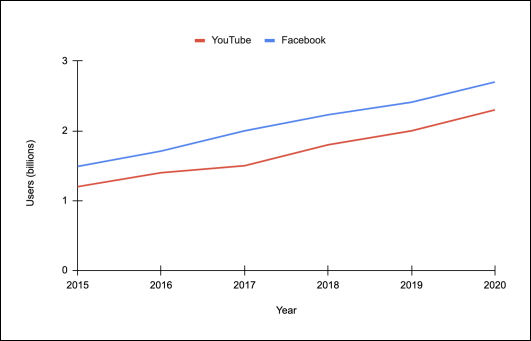
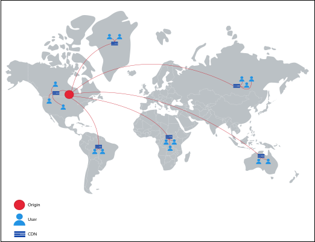
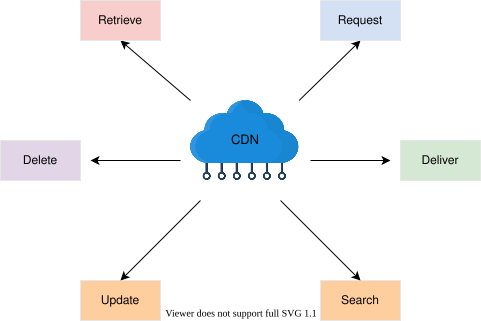
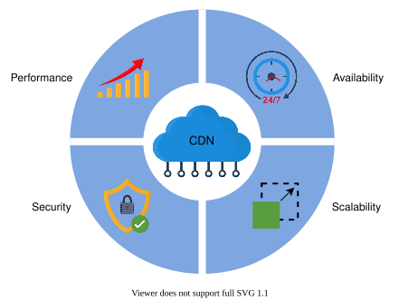
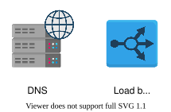
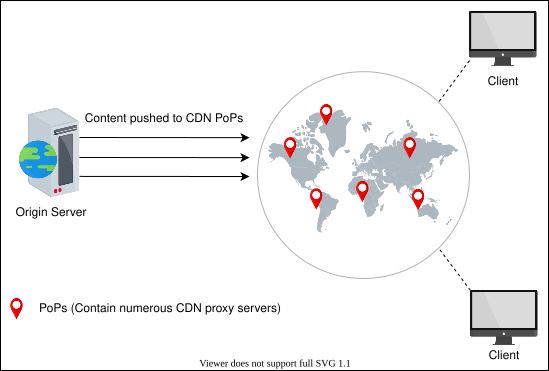
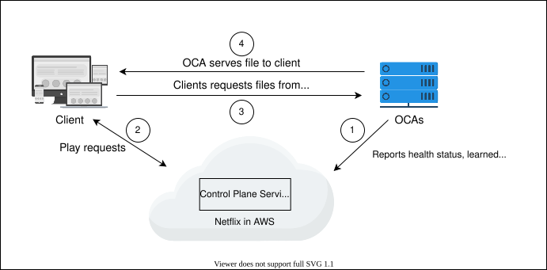
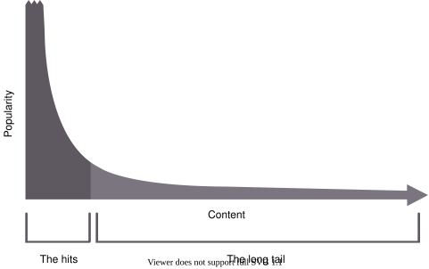

11. Content Delivery Network (CDN)
System Design: The Content Delivery Network (CDN)
System Design: The Content Delivery Network (CDN)
Understand what problems a CDN solves.
We'll cover the following
Problem statement#
Let’s start with a question: If millions of users worldwide use our data-intensive applications, and our service is deployed in a single data center to serve the users’ requests, what possible problems can arise?
The following problems can arise:
- High latency: The user-perceived latency will be high due to the physical distance from the serving data center. User-perceived latency has many components, such as transmission delays (a function of available bandwidth), propagation delays (a function of distance), queuing delays (a function of network congestion), and nodal processing delays. Therefore, data transmission over a large distance results in higher latency. Real-time applications require a latency below 200 milliseconds (ms) in general. For the Voice over Internet Protocol (VoIP), latency should not be more than 150 ms, whereas video streaming applications cannot tolerate a latency above a few seconds.
Note: According to one of the readings taken on December 21, 2021, the average latency from US East (N. Virginia) to US West (N. California) was 62.9 ms. Across continents—for example, from the US East (N. Virginia) to Africa (Cape Town)—was 225.63 ms. This is two-way latency, known as round-trip latency.

- Data-intensive applications: Data-intensive applications require transferring large traffic. Over a longer distance, this could be a problem due to the network path stretching through different kinds of ISPs. Because of some smaller Path message transmission unit (MTU) links, the throughput of applications on the network might be reduced. Similarly, different portions of the network path might have different congestion characteristics. The problem multiplies as the number of users grows because the origin servers will have to provide the data individually to each user. That is, the primary data center will need to send out a lot of redundant data when multiple clients ask for it. However, applications that use streaming services are both data-intensive and dynamic in nature.
Note: According to a survey, 78% of the United States consumers use streaming services, which is an increase of 25% in five years.
- Scarcity of data center resources: Important data center resources like computational capacity and bandwidth become a limitation when the number of users of a service increases significantly. Services engaging millions of users simultaneously need scaling. Even if scaling is achieved in a single data center, it can still suffer from becoming a single point of failure when the data center goes offline due to natural calamity or connectivity issues with the Internet.

Note: According to one study, YouTube, Netflix, and Amazon Prime collectively generated 80% of Internet traffic in 2020. Circa 2016, the CDN provider Akamai served 15% to 30% of web traffic (about 30 terabits per second). For 90% of Internet users, Akamai was just one hop away. Therefore, we have strong reasons to optimize the delivery and consumption of this data without making the Internet core a bottleneck.
How will we design a CDN?#
We’ve divided the design of CDN into six lessons:
- Introduction to a CDN: We’ll provide a thorough introduction to CDNs and identify the functional and non-functional requirements.
- Design of a CDN: We’ll explain how to design the CDN. We’ll also briefly describe the API design.
- In-depth Investigation of CDN: Part 1: This lesson explains caching strategies and CDN architecture. Also, we’ll discuss various approaches to finding the nearest proxy server.
- In-depth Investigation of CDN: Part 2: We’ll discuss how to make content consistent in a CDN and the deployment of proxy servers. We’ll also cover the custom and specialized CDN in detail.
- Evaluation of CDN: This lesson will provide an evaluation of our proposed design.
- Quiz on CDN System Design: We’ll reinforce major concepts of CDN design with a quiz.
Let’s think about the solution to the discussed issues in the next lesson.
Introduction to a CDN
Introduction to a CDN
Learn about CDNs, and formalize the requirements for a CDN design.
Proposed solution#
The solution to all the problems discussed in the previous lesson is the content delivery network (CDN). A CDN is a group of geographically distributed proxy servers. A proxy server is an intermediate server between a client and the origin server. The proxy servers are placed on the network edge. As the network edge is close to the end users, the placement of proxy servers helps quickly deliver the content to the end users by reducing latency and saving bandwidth. A CDN has added intelligence on top of being a simple proxy server.
We can bring data close to the user by placing a small data center near the user and storing copies of the data there. CDN mainly stores two types of data: static and dynamic. A CDN primarily targets propagation delay by bringing the data closer to its users. CDN providers make the extra effort to have sufficient bandwidth available through the path and bring data closer to the users (possibly within their ISP). They also try to reduce transmission and queuing delays because the ISP presumably has more bandwidth available within the autonomous system.
Let’s look at the different ways CDN solves the discussed problems:
- High latency: CDN brings the content closer to end users. Therefore, it reduces the physical distance and latency.
- Data-intensive applications: Since the path to the data includes only the ISP and the nearby CDN components, there’s no issue in serving a large number of users through a few CDN components in a specific area. As shown below, the origin data center will have to provide the data to local CDN components only once, whereas local CDN components can provide data to different users individually. No user will have to download their own copy of data from the origin servers.
Note: Various streaming protocols are used to deliver dynamic content by the CDN providers. For example, CDNsun uses the Real-time Messaging Protocol (RTMP), HTTP Live Streaming (HLS), Real-time Streaming Protocol (RTSP), and many more to deliver dynamic content.
- Scarcity of data center resources: A CDN is used to serve popular content. Due to this reason, most of the traffic is handled at the CDN instead of the origin servers. So, different local or distributed CDN components share the load on origin servers.

Note: A few well-known CDN providers are Akamai, StackPath, Cloudflare, Rackspace, Amazon CloudFront, and Google Cloud CDN.
Point to Ponder
Question
Does a CDN cache all content from the origin server?
Requirements#
Let’s look at the functional and non-functional requirements that we expect from a CDN.
Functional requirements#
The following functional requirements will be a part of our design:
- Retrieve: Depending upon the type of CDN models, a CDN should be able to retrieve content from the origin servers. We’ll cover CDN models in the coming lesson.
- Request: Content delivery from the proxy server is made upon the user’s request. CDN proxy servers should be able to respond to each user’s request in this regard.
- Deliver: In the case of the push model, the origin servers should be able to send the content to the CDN proxy servers.
- Search: The CDN should be able to execute a search against a user query for cached or otherwise stored content within the CDN infrastructure.
- Update: In most cases, content comes from the origin server, but if we run script in CDN, the CDN should be able to update the content within peer CDN proxy servers in a PoP.
- Delete: Depending upon the type of content (static or dynamic), it should be possible to delete cached entries from the CDN servers after a certain period.

Non-functional requirements#
- Performance: Minimizing latency is one of the core missions of a CDN. The proposed design should have minimum possible latency.
- Availability: CDNs are expected to be available at all times because of their effectiveness. Availability includes protection against attacks like DDoS.
- Scalability: An increasing number of users will request content from CDNs. Our proposed CDN design should be able to scale horizontally as the requirements increase.
- Reliability and security: Our CDN design should ensure no single point of failure. Apart from failures, the designed CDN must reliably handle massive traffic loads. Furthermore, CDNs should provide protection to hosted content from various attacks.

Building blocks we will use#
The design of a CDN utilizes the following building blocks:

- DNS is the service that maps human-friendly CDN domain names to machine-readable IP addresses. This IP address will take the users to the specified proxy server.
- Load balancers distribute millions of requests among the operational proxy servers.
In the next lesson, we’ll discuss the design of the CDN.
Design of a CDN
Design of a CDN
Let's understand the basic design of a CDN system.
CDN design#
We’ll explain our CDN design in two phases. In the first phase, we’ll cover the components that comprise a CDN. By the end of this phase, we’ll understand why we need a specific component. In the second phase, we’ll explore the workflow by explaining how each component interacts with others to develop a fully functional CDN. Let’s dive in.
CDN components#
The following components comprise a CDN:
- Clients: End users use various clients, like browsers, smartphones, and other devices, to request content from the CDN.
- Routing system: The routing system directs clients to the nearest CDN facility. To do that effectively, this component receives input from various systems to understand where content is placed, how many requests are made for particular content, the load a particular set of servers is handling, and the URI (Uniform Resource Identifier) namespace of various contents. In the next lesson, we’ll discuss different routing mechanisms to forward users to the nearest CDN facility.
- Scrubber servers: Scrubber servers are used to separate the good traffic from malicious traffic and protect against well-known attacks, like DDoS. Scrubber servers are generally used only when an attack is detected. In that case, the traffic is scrubbed or cleaned and then routed to the target destination.
- Proxy servers: The proxy or edge proxy servers serve the content from RAM to the users. Proxy servers store hot data in RAM, though they can store cold data in SSD or hard drive as well. These servers also provide accounting information and receive content from the distribution system.
- Distribution system: The distribution system is responsible for distributing content to all the edge proxy servers to different CDN facilities. This system uses the Internet and intelligent broadcast-like approaches to distribute content across the active edge proxy servers.
- Origin servers: The CDN infrastructure facilitates users with data received from the origin servers. The origin servers serve any unavailable data at the CDN to clients. Origin servers will use appropriate stores to keep content and other mapping metadata. Though, we won’t discuss the internal architecture of origin infrastructure here.
- Management system: The management systems are important in CDNs from a business and managerial aspect where resource usage and statistics are constantly observed. This component measures important metrics, like latency, downtime, packet loss, server load, and so on. For third-party CDNs, accounting information can also be used for billing purposes.

Workflow#
The workflow for the abstract design is given below:
- The origin servers provide the URI namespace delegation of all objects cached in the CDN to the request routing system.
- The origin server publishes the content to the distribution system responsible for data distribution across the active edge proxy servers.
- The distribution system distributes the content among the proxy servers and provides feedback to the request routing system. This feedback is helpful in optimizing the selection of the nearest proxy server for a requesting client. This feedback contains information about which content is cached on which proxy server to route traffic to relevant proxy servers.
- The client requests the routing system for a suitable proxy server from the request routing system.
- The request routing system returns the IP address of an appropriate proxy server.
- The client request routes through the scrubber servers for security reasons.
- The scrubber server forwards good traffic to the edge proxy server.
- The edge proxy server serves the client request and periodically forwards accounting information to the management system. The management system updates the origin servers and sends feedback to the routing system about the statistics and detail of the content. However, the request is routed to the origin servers if the content isn’t available in the proxy servers. It’s also possible to have a hierarchy of proxy servers if the content isn’t found in the edge proxy servers. For such cases, the request gets forwarded to the parent proxy servers.
API Design#
This section will discuss the API design of the functionalities offered by CDN. This will help us understand how the CDN will receive requests from the clients, receive content from the origin servers, and communicate to other components in the network. Let’s develop APIs for each of the following functionalities:
- Retrieve content
- Deliver content
- Request content
- Search content
- Update content
- Delete content
Content can be anything, like a file, video, audio, or other web object. Here, we’ll use the word “content” to refer to all of the above. For clarity, we won’t discuss the privacy-related parameters—like if the content is public or private, who should be able to access this content, if it should be encrypted, and so on—in the following APIs.
Retrieve (proxy server to origin server)#
If the proxy servers request content, the GET method retrieves the content through the /retrieveContent API below:
retrieveContent(porxyserver_id, content_type, content_version, description)
Let’s see the details of the parameters:
Parameter | Description |
| This is a unique ID of the requesting proxy server. |
| This data structure will contain information about the requested content. Specifically, it will contain the category (audio, video, document, script, and so on), the type of clients it’s requested for, and the requested quality (if any). |
| This represents the version number of the content. For the |
| This specifies the content detail—for example, the video's extension, resolution detail, and so on if the |
The above API gives a response in a JSON file, which contains the text, content types, links to the images or videos in the content, and so on.
Deliver (origin server to proxy servers)#
The origin servers use this API to deliver the specified content, theupdated version, to the proxy servers through the distribution system. We call this the /deliverContent API:
deliverContent(origin_id, server_list, content_type, content_version, description)
Parameter | Description |
| This recognizes each origin server uniquely. |
| This identifies the list of servers the content will be pushed to by the distribution system. |
| This represents the updated version of the content at the origin server. The proxy server receiving the content will discard the previous version. |
The rest of the parameters have been explained above already.
Request (clients to proxy servers)#
The users use this API to request the content from the proxy servers. We call this the /requestContent API:
requestContent(user_id, content_type, description)
Parameter | Description |
| This is the unique ID of the user who requested the content. |
The specified proxy server returns the particular content to the requested users in response to the above API.
Search (proxy server to peer proxy servers)#
Although the content is first searched locally at the proxy server, the proxy servers can also probe requested content in the peer proxy servers in the same PoP through the /searchContent API.
This could flood the query to all proxy servers in a PoP. Alternatively, we can use a data store in the PoP to query the content, though proxy servers will need to maintain what content is available on which proxy server.
The /searchContent API is shown below:
searchContent(porxyserver_id, content_type, description)
Update (proxy server to peer proxy servers)#
The proxy servers use the /updateContent API to update the specified content in the peer proxy servers in the PoP. It does so when specified isolated scripts run on the CDN to provide image resizing, video resolution conversion, security, and many more services. This type of scripting is known as serverless scripting.
The /updateContent API is shown below:
updateContent(porxyserver_id, content_type, description)
Parameter | Description |
| This recognizes the proxy server uniquely in the PoP to update the content. |
The rest of the parameters have been explained above already.
Note: The Delete API isn’t discussed here. In our caching chapter, we discussed different eviction mechanisms in detail. Those mechanisms are also applicable for a CDN content eviction. Nevertheless, situations can arise where the Delete APIs may be required. We’ll discuss a few content consistency mechanisms, like how much time content stays in the cache, in the next lesson.
In the upcoming lessons, we’ll dive deep into the characteristics of CDNs.
In-depth Investigation of CDN: Part 1
In-depth Investigation of CDN: Part 1
Learn push and pull models and dynamic content cache optimization in CDNs.
We'll cover the following
In this lesson, we’ll go into the details of certain concepts, such as CDN models and multi-tier/layered CDN architecture, that we mentioned in the previous lessons. We’ll also introduce some new concepts, including dynamic content caching optimization and various techniques to discover the nearby proxy servers in CDNs.
Content caching strategies in CDN#
Identifying content to cache is important in delivering up-to-date and popular web content. To ensure timely updates, two classifications of CDNs are used to get the content from the origin servers.
Push CDN#
Content gets sent automatically to the CDN proxy servers from the origin server in the push CDN model. The content delivery to the CDN proxy servers is the content provider’s responsibility. Push CDN is appropriate for static content delivery, where the origin server decides which content to deliver to users using the CDN. The content is pushed to proxy servers in various locations according to the content’s popularity. If the content is rapidly changing, the push model might struggle to keep up and will do redundant content pushes.

Pull CDN#
A CDN pulls the unavailable data from origin servers when requested by a user. The proxy servers keep the files for a specified amount of time and then remove them from the cache if they’re no longer requested to balance capacity and cost.
When users request web content in the pull CDN model, the CDN itself is responsible for pulling the requested content from the origin server and serving it to the users. Therefore, this type of CDN is more suited for serving dynamic content.

As stated, the push CDN is mostly used for serving static content. Since static content is served to a wide range of users for longer than dynamic content, the push CDN scheme maintains more replicas than the pull CDN, thus improving availability. On the other hand, the pull CDN is favored for frequently changing content and a high traffic load. Low storage consumption is one of the main benefits of the pull CDN.
Note: Most content providers use both pull and push CDN caching approaches to get the benefits of both.
Dynamic content caching optimization#
Since dynamic content often changes, it’s a good idea to cache it optimally. This section deals with the optimization of frequently changing content.
Certain dynamic content creation requires the execution of scripts that can be executed at proxy servers instead of running on the origin server. Dynamic data can be generated using various parameters, which can be beneficial if executed at the proxy servers. For example, we can generate dynamic content based on user location, time of day at a location, third-party APIs specific to a location (for instance, weather API), and so on. So, it’s optimal to run the scripts at proxy servers instead of the origin servers.
To reduce the communication between the origin server and proxy servers and storage requirements at proxy servers, it’s useful to employ compression techniques as well. For example, Cloudflare uses Railgun to compress dynamic content.
Another popular approach for dynamic data compression is Edge Side Includes (ESI) markup language. Usually, a small portion of the web pages changes in a certain time. It means fetching a full web page on each small change contains a lot of redundant data. To resolve this performance penalty, ESI specifies where content was changed so that the rest of the web page content can be cached. It assembles dynamic content at the CDN edge server or client browser. ESI isn’t standardized yet by the World Wide Web Consortium (W3C), but many CDN providers use it.
Note: Dynamic Adaptive Streaming one HTTP (DASH) uses a manifest file with URIs of the video with different resolutions so that the client can fetch whatever is appropriate as per prevailing network and end node conditions. Netflix uses a proprietary DASH version with a Byte-range in the URL for further content request and delivery optimization.
Multi-tier CDN architecture#
The content provider sends the content to a large number of clients through a CDN. The task of distributing data to all the CDN proxy servers simultaneously is challenging and burdens the origin server significantly. CDNs follow a tree-like structure to ease the data distribution process for the origin server. The edge proxy servers have some peer servers that belong to the same hierarchy. This set of servers receives data from the parent nodes in the tree, which eventually receive data from the origin servers. The data is copied from the origin server to the proxy servers by following different paths in the tree.
The tree structure for data distribution allows us to scale our system for increasing users by adding more server nodes to the tree. It also reduces the burden on the origin server for data distribution. A CDN typically has one or two tiers of proxy servers (caches). The following illustration shows the two tiers of proxy servers:

Whenever a new proxy server enters the tree of a CDN, it requests the control core, which maintains information on all the proxy servers in the CDN and provides initial content with the configuration data.
Research shows that many contents have long-tail distribution. This means that, at some point, only a handful of content is very popular, and then we have a long tail of less popular content. Here, a multi-layer cache might be used to handle long-tail content.
Point to Ponder
Question
What happens if a child or parent proxy server fails or if the origin server fails?
Now that we’ve seen a way to distribute content from the origin server to all the proxy servers of the CDN, we should also educate ourselves on how users can use these proxy servers to get the data more efficiently. We’ll discuss how the nearest proxy server is chosen when clients make requests and how the CDN is located in the upcoming sections of this lesson.
Find the nearest proxy server to fetch the data#
It’s vital for the user to fetch data from the nearest proxy server because the CDN aims to reduce user-perceived latency by bringing the data close to the user. However, the question remains of how users worldwide request data from the nearest proxy server. The goal of this section is to answer that question.
Important factors that affect the proximity of the proxy server#
There are two important factors that are relevant to finding the nearest proxy server to the user:
- Network distance between the user and the proxy server is crucial. This is a function of the following two things:
- The first is the length of the network path.
- The second is the capacity (bandwidth) limits along the network path.
The shortest network path with the highest capacity (bandwidth) is the nearest proxy server to the user in question. This path helps the user download content more quickly.
- Requests load refers to the load a proxy server handles at any point in time. If a set of proxy servers are overloaded, the request routing system should forward the request to a location with a lesser load. This action balances out the proxy server load and, consequently, reduces the response latency.
Let’s look at the techniques that can be used to route users to the nearest proxy server.
DNS redirection#
In a typical DNS resolution, we use a DNS system to get an IP against a human-readable name. However, the DNS can also return another URI (instead of an IP) to the client. Such a mechanism is called DNS redirect.
Content providers can use DNS redirect to send a client to a specific CDN. As an example, if the client tries to resolve a name that has the word “video” in it, the authoritative DNS server provides another URL (for example, cdn.xyz.com). The client does another DNS resolution, and the CDN’s authoritative DNS provides an IP address of an appropriate CDN proxy server to fetch the required content.
Depending on the location of the user, the response of the DNS can be different. Let’s see the slides below to understand how DNS redirection works:
Note: The nearest proxy server doesn’t necessarily mean the one that’s geographically the closest. It could be, but it’s not only the geography that matters. Other factors like network distance, bandwidth, and traffic load already on that route also matter.
There are two steps in the DNS redirection approach:
- In the first step, it maps the clients to the appropriate network location.
- In the second step, it distributes the load over the proxy servers in that location to balance the load among the proxy servers (see DNS and Load Balancers building blocks for more details on this).
DNS redirection takes both of these important factors—network distance and requests load—into consideration, and that reduces the latency towards a proxy server.
To shift a client from one machine in a cluster to another, the DNS replies at the second step are given with short TTLs so that the client repeats the resolution after a short while. DNS keeps delivering the content by routing requests to other active servers in case of hardware failures and network congestion. It does so by load balancing the traffic, using intelligent failover, and maintaining servers across many data centers, which achieves good reliability and performance.
Since the load at proxy servers changes over time, the content provider needs to make appropriate changes in the DNS to make the DNS redirection effective. Many CDN providers like Akamai use DNS redirection in their routing system.
Anycast#
Anycast is a routing methodology in which all the edge servers located in multiple locations share the same single IP address. It employs the Border Gateway Protocol (BGP) to route clients based on the Internet’s natural network flow. A CDN provider can use the anycast mechanism so that clients are directed to the nearest proxy servers for content.
Client multiplexing#
Client multiplexing involves sending a client a list of candidate servers. The client then chooses one server from the list to send the request to. This approach is inefficient because the client lacks the overall information to choose the most suitable server for their request. This may result in sending requests to an already-loaded server and experiencing higher access latency.
HTTP redirection#
HTTP redirection is the simplest of all approaches. With this scheme, the client requests content from the origin server. The origin server responds with an HTTP protocol to redirect the user via a URL of the content.
Below is an example of an HTML snippet provided by Facebook. As is highlighted in line 8, the user is redirected to the CDN to download the logo of Facebook:
In the next lesson, we discuss the different details of content consistency and proxy server deployment in CDN.
In-depth Investigation of CDN: Part 2
In-depth Investigation of CDN: Part 2
Learn about content consistency mechanisms and the deployment of the proxy server in a CDN.
In this lesson, we learn how content consistency can be achieved using different consistency mechanisms. We also learn about where we should deploy the proxy servers and the difference between CDN as a service and specialized CDN.
Content consistency in CDN#
Data in the proxy servers should be consistent with data in the origin servers. There’s always a risk of users accessing stale data if the proxy servers don’t remain consistent with the origin servers. Different consistency mechanisms can be used to ensure consistency of data, depending on the push or pull model.
Periodic polling#
Using the pull model, proxy servers request the origin server periodically for updated data and change the content in the cache accordingly. When content changes infrequently, the polling approach consumes unnecessary bandwidth. Periodic polling uses time-to-refresh (TTR) to adjust the time period for requesting updated data from the origin servers.
Time-to-live (TTL)#
Because of the TTR, the proxy servers may uselessly request the origin servers for updated data. A better approach that could be employed to reduce the frequency of refresh messages is the time-to-live (TTL) approach. In this approach, each object has a TTL attribute assigned to it by the origin server. The TTL defines the expiration time of the content. The proxy servers serve the same data version to the users until that content expires. Upon expiration, the proxy server checks for an update with the origin server. If the data is changed, it gets the updated data from the origin server and then responds to the user’s requests with the updated data. Otherwise, it keeps the same data with an updated expiration time from the origin servers.
Leases#
The origin server grants a lease to the data sent to a proxy server using this technique. The lease denotes the time interval for which the origin server agrees to notify the proxy server if there’s any change in the data. The proxy server must send a message requesting a lease renewal after the expiration of the lease. The lease method helps to reduce the number of messages exchanged between the proxy and origin server. Additionally, the lease duration can be optimized dynamically according to the observed load on the proxy servers. This technique is referred to as an adaptive lease.
In the following section, we discuss where to place the CDN proxy server to transmit data effectively.
Deployment#
We have to be clear with the answers to the following questions before we instal the CDN facility:
- What are the best locations to install proxy servers to maximally utilize CDN technology?
- How many CDN proxy servers should we install?
Placement of CDN proxy servers#
The CDN proxy servers must be placed at network locations with good connectivity. See the options below:
- On-premises represents a smaller data center that could be placed near major IXPs.
- Off-premises represents placing CDN proxy servers in ISP’s networks.
Today, it might be feasible to keep a large portion of a movie’s data in a CDN infrastructure that’s housed inside an ISP. Still, for services like YouTube, data is so large and ever-expanding that it’s challenging to decide what we should put near a user. Google uses split TCP to reduce user-perceived delays by keeping persistent connections with huge TCP windows from the IXP-level infrastructure to their primary data centers. The client’s TCP requests terminate at the IXP-level infrastructure and are then forwarded on already established, low latency TCP connections.
Doing this substantially reduces client-perceived latency, which is due to the avoidance of the initial three-way handshake of TCP connection and slow-start stages to a host far away (had the client wanted to go to the primary data centers of Google). A round-trip delay to IXP is often very low. Therefore, three-way handshakes and slow starts at that level are negligible. Predictive push is a significant research field to decide what to push near the customers.
We can use measurements to facilitate the decision of proxy server placement. One such tool is ProxyTeller to decide where to place the proxy server and how many proxy servers are required to achieve high performance. ProxyTeller uses hit ratio, network bandwidth, and client-response time (latency) as performance parameters to decide the placement of proxy servers. Other greedy, random, and hotspot algorithms are also used for proxy server placements.
Note: Akamai and Netflix popularized the idea of keeping their CDN proxy servers inside the client’s ISPs. For many clients of Akamai, content is just one network hop away. On the other hand, Google also has its private CDN infrastructure but relies more on its servers near IXPs. One reason for this could be the sheer amount of data and the change patterns.
Point to Ponder
Question
What benefits could an ISP get by placing the CDN proxy servers inside their network?
CDN as a service#
Most companies don’t build their own CDN. Instead, they use the services of a CDN provider, such as Akamai, Cloudflare, Fastly, and so on, to deliver their content. Similarly, players like AWS make it possible for anyone to use a global CDN facility.
The companies sign a contract with the CDN service provider and deliver their content to the CDN, thereby allowing the CDN to distribute the content to the end users. A public CDN raises the following concerns for content providers:
-
The content provider can’t do anything if the public CDN is down.
-
If a public CDN doesn’t have any proxy servers located in the region or country where some website traffic comes from, then those specific customers are out of luck. In such cases, the content providers have to buy CDN services from other CDN providers or deploy and use their own private CDN.
-
It’s possible that some domains or IP addresses of CDN providers are blocked or restricted in some countries because they might be delivering content that’s banned in those countries.
Note: Some companies make their own CDN instead of using the services of CDN providers. For example, Netflix has its own purpose-built CDN called Open Connect.
Specialized CDN#
We’ve discussed that many companies use CDN as a service, but there are cases where companies build their own CDN. A number of reasons factor into this decision. One is the cost of a commercial CDN service. A specialized CDN consists of points of presence (PoPs) that only serve content for their own company. These PoPs can be caching servers, reverse proxies, or application delivery controllers. Although a specialized CDN has high costs at its first setup, the costs eventually decrease with time. In essence, it’s a buy versus build decision.
The specialized CDN’s PoPs consist of many proxy servers to serve petabytes of content. A private CDN can be used in coexistence with a public CDN. In case the capacity of a private CDN isn’t enough or there’s a failure that leads to capacity reduction, the public CDN is used as a backup. Netflix’s Open Connect Appliance (OCA) is an example of a CDN that’s specialized in video delivery.
Netflix’s OCA servers don’t store user data. Instead, they fulfill the following tasks:
- They report their status—health, learned routes, and details of cached content—to the Open Connect control plane that resides in AWS (Amazon Web Services).
- They serve the cached content that’s requested by the user.

All the deployed OCAs situated in IXP or embedded in the ISP network are monitored by the Open Connect operation team.
Why Netflix built its CDN#
As Netflix became more popular, it decided to build and manage its own CDN for the following reasons:
-
The CDN service providers were scuffling to expand their infrastructure due to the rapid growth in customer demand for video streaming on Netflix.
-
With the increasing volume of streaming videos, the expense of using CDN services increased.
-
Video streaming is the main business and a primary revenue source for Netflix. So, protecting the data of all the videos on the platform is critical. Netflix’s OCA manages potential data leakage risks in a better way.
-
To provide optimal streaming media delivery to customers, Netflix needed to maximize its control over the user’s video player, the network between the user, and the Netflix servers.
-
Netflix’s OCA can use custom HTTP modules and TCP connection algorithms to detect network problems quickly and troubleshoot any issues in their CDN network.
-
Netflix wanted to keep popular content for a long time. This wasn’t entirely possible while operating with a public CDN due to the high costs that would be incurred to keep and maintain it.
Note: Netflix is able to achieve a hit ratio close to 95% using OCA.
We’ll evaluate our proposed design in the next lesson.
Evaluation of CDN's Design
Evaluation of CDN's Design
Let's evaluate our proposed CDN.
We'll cover the following
Evaluation#
Here, we see how our design fulfills the requirements we discussed in the previous lessons. Our main requirements are high performance, availability, scalability, reliability, and security. Let’s discuss them all one by one.
Performance#
CDN achieves high performance by minimizing latency. Some of the key design decisions that minimize latency are as follows:
- Proxy servers usually serve content from the RAM.
- CDN proxy servers are placed near the users to provide faster access to content.
- A CDN can also be the provider of proxy servers located in the ISP or Internet exchange points (IXPs) to handle high traffic.
- The request routing system ensures that users are directed to the nearest proxy servers. We’ll have a detailed discussion on the request routing system in the next lesson.
- The proxy servers have long-tail content stored in nonvolatile storage systems like SSD or HDD. Serving from these resources results in a more negligible latency than we’d see from serving content from origin servers.

- As was discussed previously, proxy servers can be implemented in layers where if one layer doesn’t have the content, the request can be entertained by the next layer of proxy servers. For example, the edge proxy servers can request the parent proxy servers. Placing proxy servers at specific ISPs could be the best option when most traffic comes from those ISP regions.
Availability#
A CDN can deal with massive traffic due to its distributed nature. A CDN ensures availability through its cached content that serves as a backup whenever the origin servers fail. Moreover, if one or more proxy servers in the CDN stop working, other operational proxy servers step in and continue to drive the web traffic. In addition, edge proxy servers can be made available through redundancy by replicating data to as many proxy servers as needed to avoid a single point of failure and to meet the request load. Finally, we can use a load balancer to distribute the users’ requests to nearby active proxy servers.
Scalability#
The design of CDN facilitates scalability in the following ways:
- It brings content closer to the user and removes the requirement of high bandwidth, thereby ensuring scalability.
- Horizontal scalability is possible by adding the number of reading replicas in the form of edge proxy servers.
- The limitations with horizontal scalability and storage capacity of an individual proxy server can be dealt with using the layered architecture of the proxy servers we described above.
Reliability and security#
A CDN ensures no single failure point by carefully implementing maintenance cycles and integrating additional hardware and software when required. Apart from failures, the CDN handles massive traffic loads by equally distributing the load to the edge proxy servers. We can use scrubber servers to prevent DDoS attacks and securely host content. Moreover, we can use the heartbeat protocol to monitor the health of servers and omit faulty servers. Real-time applications also build their own specified CDNs to prevent content leakage problems and securely serve content to their end users.
Conclusion#
Since its inception in the 1990s, the CDN has played a vital role in providing high availability and low-latency content delivery. Nowadays, CDNs are considered a key player in improving the overall performance of giant services.
Quiz on CDN's Design
Quiz on CDN's Design
Test your knowledge of concepts related to CDNs.
Which CDN approach will be the most suitable to use when most of the web content is static?
A)
Pull CDN
B)
Push CDN